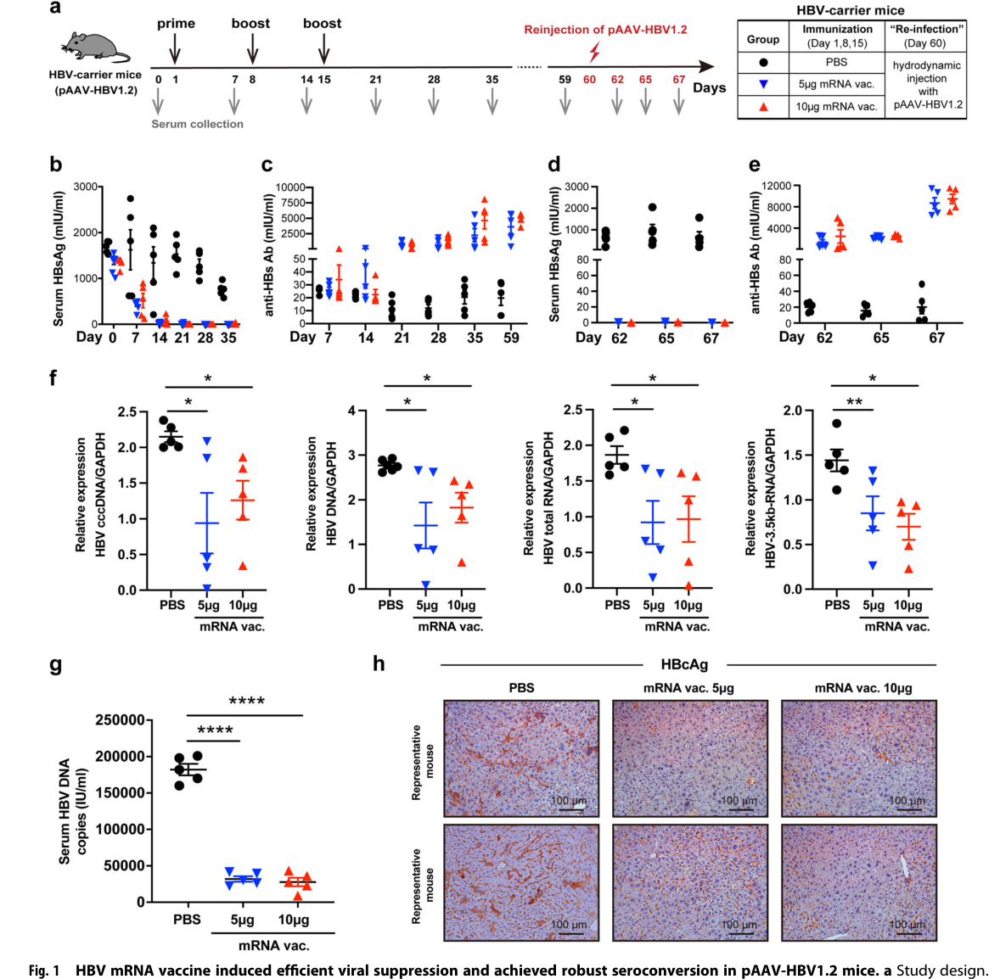
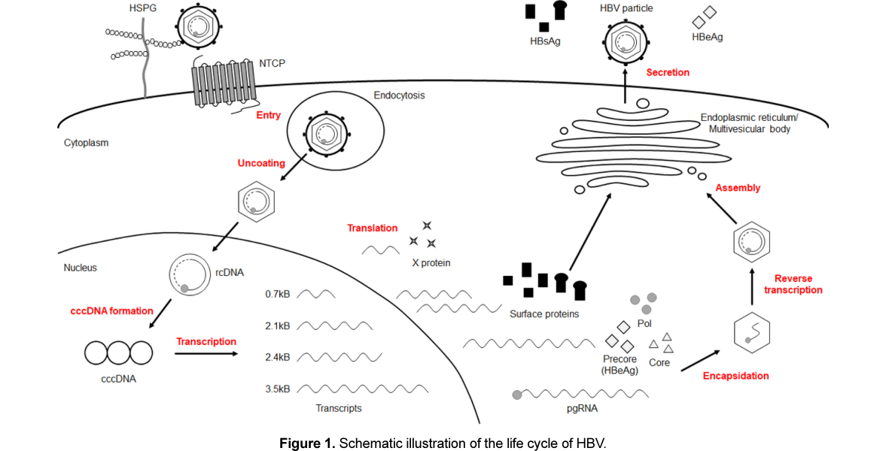
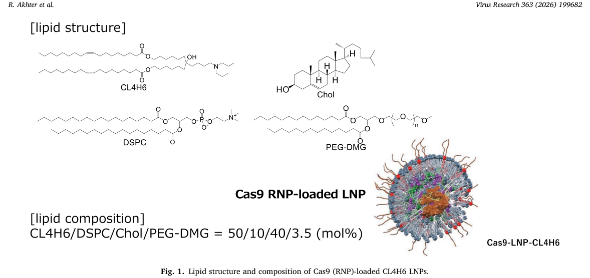

乙肝疫苗深度学习计划 · 阶段四报告（收官）
创新孵化框架：表位广谱设计、转化验证路径与三段式功能性治愈立项论证
编制：Claw ｜ 2026-08-23 ｜ 全部硬事实经PubMed/官方公告核实（含本轮挂账5项全部核销）
本报告完成计划书第四部分并收官：①表位设计——S-only路线的根本弱点（a决定簇逃逸突变）与PreS1/PreS2扩展的科学依据；②动物模型——从水动力模型到人源化双重建小鼠的选择逻辑；③CMC——mRNA-LNP与GalNAc-siRNA的平台化制造要点；④临床终点——功能治愈复合终点的演化；⑤cccDNA编辑体内证据——LNP递送CRISPR的最新突破；⑥三段式功能性治愈正式立项论证（TPP、竞争、路线图、风险、Go/No-Go）。
前置声明：本轮完成此前全部挂账核销（见第七章核销总表）——包括两项重要修正：JNJ-3989权益已于2023年10月转授GSK（并非简单“退出”）；inarigivir终止于2020年1月（IIb期出现含1例死亡的SAE）。
经典重组疫苗仅含小S抗原，其主要中和表位集中于“a决定簇”（aa 124-147，亲水区）。1990年Carman等在Lancet首次报告疫苗诱导的逃逸突变（G145R，甘氨酸145→精氨酸）：意大利疫苗失败婴儿体内分离的突变株 escapes 疫苗诱导中和抗体——该文献被引700+次，是“S-only表位宽度不足”的奠基性证据。此后G145R、K141E、T126I等逃逸突变在多国疫苗失败病例中反复出现；计算结构生物学分析显示G145R改变a决定簇局环构象、削弱抗体结合（G145R对HBsAg结构与免疫原性影响的计算分析，2016，OA）。
[1] Carman WF, et al. Vaccine-induced escape mutant of hepatitis B virus. Lancet. 1990;336:325-329. PMID 1697396 [奠基文献]
[2] Rezaee R, et al. Impacts of the G145R mutation on the structure and immunogenic activity of HBsAg: A computational analysis. Hepat Mon. 2016;16:e39097. PMID 27642350（OA）
PreS1（108/119 aa）：其N端2-48 aa（肉豆蔻酰化）是HBV与肝细胞受体NTCP（牛磺胆酸钠共转运多肽）的结合域——Yan等2012年鉴定NTCP为HBV/HDV受体（eLife），后续综述系统阐述PreS1-NTCP互作（PMID 26071008, 26045274）。抗PreS1抗体直接阻断病毒进入（Myrcludex-B/bulevirtide即preS1模拟肽，已获批HDV适应症——阶段二勘误后的批准事实）；且PreS1/PreS2序列保守性高于a决定簇，跨基因型中和谱更宽。
PreS2：含T细胞表位与聚合人血清白蛋白受体结合区；PreS1+PreS2+S三抗原疫苗（PreHevbrio）在III期PROTECT中总体SPR 91.4%、≥45岁人群89.4% vs 73.1%优效——直接证明PreS扩展修复难应答人群（阶段三已核，PMID 33989539）。治疗端：BRII-179（PreS1/PreS2/S三抗原VLP）联合siRNA的IIa中，PreS特异性IL-2 T细胞应答仅联合组出现（PMID 40043858）——PreS表位在打破耐受上的价值有随机证据。
设计语法总结：广谱保护 = 中和B细胞表位（PreS1受体结合域+a决定簇嵌合）+ 广谱T细胞表位（PreS2/HBcAg CD4/CD8表位，MHC多样性覆盖）+ 基因型共识序列（全球主要基因型A-J，中国以B/C为主、南方C型、北方B型——分布数据见Shechter综述PMID 40332208）。
[3] Yan H, et al. NTCP opens the door for hepatitis B virus infection. Antiviral Res. 2015;121:24-30. PMID 26071008（NTCP-PreS1综述）
蛋白疫苗（PreHevbrio）：三抗原天然构象VLP，但表达系统（CHO）限制表位工程自由度；mRNA疫苗：抗原序列可直接设计——共识序列/mosaic嵌入多基因型表位、PreS1受体结合域嵌合于S框架、分泌型与膜结合型抗原共表达（prime B细胞与MHC-I提呈双通道）；杨勇团队已验证rAAV-HBV耐受模型中mRNA三抗原设计的持久病毒学抑制（NPJ Vaccines 2024，PMID 38310094，阶段二已增补）——mRNA治疗性疫苗+PreS表位扩展的组合是全球未占领的交叉点（专利检索阶段二已示：hepatitis b×mRNA vaccine专利面近零+浙大2025首件组合专利）。

图1 治疗性HBV mRNA疫苗设计（Zhao H, ..., Yang Y. NPJ Vaccines 2024;9:22, Fig.1, CC BY）
| 模型 | 原理 | 优势 | 局限 | 适用阶段 | 锚点 |
|---|---|---|---|---|---|
| 水动力pAAV-HBV1.2 | 尾静脉高压注射质粒→肝细胞表达 | 快速、廉价、可变基因组 | 非真实感染周期、无cccDNA微染色体 | 抗原/佐剂初筛 | 杨勇2024使用 |
| rAAV8-HBV1.3 | rAAV递送→持续表达 | 免疫耐受态更接近慢性感染 | 仍是游离/整合表达，非真cccDNA | 耐受突破评价 | 杨勇2024使用；PMID 38310094 |
| 人源化肝脏小鼠（uPA-SCID/FRG/TK-NOG） | 人肝细胞重建肝脏→可感染人HBV | 真实cccDNA+完整感染周期 | 无适应性免疫（不能评价疫苗） | 感染/直接抗病毒药效 | Allweiss & Dandri综述 PMID 27084033；TK-NOG PMID 24140055 |
| 双重建小鼠（cDNA-uPA/SCID/Rag2-/-/Jak3-/-） | 人肝+人免疫系统共重建 | 可同时评价感染与免疫干预（疫苗！） | 技术门槛高、嵌合度波动 | 治疗性疫苗评价金标准 | Uchida 2023 PMID 36575861 |
| 土拨鼠（WHV） | 天然嗜肝DNA病毒近缘 | 感染自然史最接近人、WHV cccDNA可评价 | 土拨鼠PrP限制、昂贵、设施少 | 清库策略（编辑/降解）长期评价 | Dandri/Allweiss系列 |
| 树鼩 | 可感染HBV的小型灵长类近缘 | AAV2-CRISPR体内试验已实现cccDNA靶向 | 感染效率个体差异大 | 清库策略体内验证 | Rashid 2025 PMID 39988206（OA） |
| 鸭HBV（DHBV） | 禽嗜肝DNA病毒 | 便宜、伦理门槛低 | 与HBV进化距离远、药物代谢差异 | 课堂/机制教学、大批量初筛 | Hwang & Park 2018综述 PMID 30310404（OA） |

图2 HBV研究小鼠模型概览（Hwang JR, Park SG. Lab Anim Res 2018;34:85-91, Figure 1, OA）
第一阶（抗原设计验证，0-12月）：水动力+ rAAV8双模型筛选三抗原mRNA构象（对照S-only），读出抗-HBs滴度、PreS1特异性IL-2/IFNγ ELISpot、HBsAg动力学；第二阶（免疫重建验证，12-24月）：双重建小鼠（人肝+人免疫）验证降抗原后疫苗的免疫重建（读出：anti-HBs血清转换、cccDNA转录下降）；第三阶（清库策略验证，与第一二阶并行）：人源化肝脏小鼠评价LNP-编辑酶的cccDNA清除（读出：cccDNA拷贝/细胞、Southern blot+qPCR），树鼩/土拨鼠做长期安全性（整合DNA误切、脱氨脱靶）。
关键对照设计：每阶设置NUC单药、siRNA单药、空LNP对照组；治疗性疫苗读出必须包含“停药后反弹曲线”——REEF-1的教训（达标≠治愈，停药后动力学才是功能治愈的真终点）。
序列设计：LinearDesign类算法优化稳定性与表达（杨勇团队已用，百度专利背景）；5'帽（CleanCap共转录）、3' polyA（固定长度设计）、UTR优选（人源α/β球蛋白或合成UTR）；核苷修饰（N1-甲基假尿苷，降低固有免疫激活——治疗性场景需在“佐剂效应”与“抗原表达”间平衡：预防疫苗用mRNA倾向保留部分固有免疫刺激，治疗性疫苗在免疫耐受宿主体内可适度利用TLR激动特性作为内佐剂，此为工艺窗口的差异化设计点）。
LNP组分：可电离脂质（肝靶向蓄积天然优势）、PEG脂质（重复给药抗PEG抗体风险——治疗性疫苗需多次免疫，建议低PEG比例/可切换PEG替代物）、胆固醇与辅助脂质；制剂质控：粒径（60-100 nm PDI<0.2）、包封率（>80%）、mRNA完整性（毛细管电泳）、内毒素与无菌。
固相合成规模化成熟（三、四聚GalNAc与固相载体连接）；2'-F/2'-OMe修饰模式与磷酸硫代骨架的经验从已上市ASO/siRNA产品直接迁移；质控重点：修饰位点确认（LC-MS）、偶联度、肝/肾分布比。
碱基编辑器/小型化Cas（如Cas12f/CasMINI）mRNA长度3-5 kb（远大于抗原mRNA的1-2 kb）→LNP载量与包封工艺需专项开发（Akhter 2026证明LNP-RNP路线可行，见第五章）；RNP（蛋白+gRNA预组装）路线可绕开长mRNA载量问题但需蛋白GMP线。质控新增：编辑效率（体外肝原代细胞AmplSeq）、脱靶谱（GUIDE-seq/CIRCLE-seq）、整合DNA误切风险（长 reads测序）。
功能治愈终点演化：早期单药时代“HBsAg阴转”→组合时代复合终点：①HBsAg<LOD+anti-HBs≥10 mIU/mL（血清转换）；②HBV DNA持续检测不出；③停NUC后维持≥24周（B-Clear）或≥48周（当前III期设计趋势）；④探索性：cccDNA转录活性标志物（HBcrAg<4 log10 U/mL+anti-HBs>2 log10 IU/L对持续应答PPV 100%——Shechter综述引述的预测组合，PMID 40332208）。
分层入组标准（三阶段证据已定）：基线HBsAg<100 IU/mL（免疫干预应答窗）、HBeAg状态、治疗史（NA经治/初治）；样本量参考：II期200-500（B-Clear 457/REEF-1 470）、III期需按10-30%应答率差非劣/优效设计（当前GSK III期进行中，编号待确认不硬填）。
监管沟通要点：治疗性疫苗+mRNA为全新组合类别，建议Pre-IND会议先行确定：①复合终点的可接受性；②伴随诊断（基线HBsAg分层试剂盒）；③长期随访（整合DNA/肝癌风险）。
三段式的第二段（清库）在2025-2026年出现关键体内证据：
① LNP体内递送CRISPR/Cas9靶向HBV（Virus Research 2026，OA）：优化LNP装载RNP-寡核苷酸复合物，实现体内HBV基因组靶向切割——证明『LNP递送编辑器』技术路线在HBV场景可行性（图3）；
[4] Akhter R, et al. Optimization of LNPs loaded with RNP-oligonucleotide complexes for in vivo delivery of CRISPR/Cas9 targeting HBV. Virus Res. 2026;363:199682. PMID 41453683（OA全文在手）

图3 LNP递送CRISPR/Cas9 RNP的体内策略（Akhter R, et al. Virus Res 2026;363:199682, Fig.1, CC BY）
② AAV2-CRISPR在树鼩体内靶向HBV（Virus Research 2025，OA）：树鼩感染模型实现cccDNA/整合DNA靶向降解（PMID 39988206）——非人灵长类近缘模型的清库验证；
③ 多重基因编辑抑制随机整合DNA（Mol Ther Nucleic Acids 2026，OA）：慢性感染肝脏中multiplex编辑压制HBV DNA随机整合——直接回应『编辑误切整合DNA』安全性焦虑的正向证据（PMID 42221546）；
④ 半乳糖工程化双响应纳米载体递送ASO/CRISPR（Adv Healthc Mater 2026）：Gal配体×CRISPR组合递送抑制HBV复制（PMID 41039747）——与GalNAc路线的直接交叉验证；
⑤ 系统综述（J Cell Mol Med 2026，OA）梳理CRISPR路线全部挑战（脱靶、递送效率、cccDNA池异质性）——风险登记册的基础文献（PMID 41503845）。
综合判断：清库环节的『可行性证据密度』在12个月内显著上升，但距临床仍有3-5年（编辑效率×肝细胞覆盖率×安全性三角未闭合）；合理定位为『跟随+平台卡位』（LNP编辑酶递送），不做首创新机制。
| 要素 | 目标设定 | 依据 |
|---|---|---|
| 适应症 | CHB功能性治愈（NA经治、HBeAg-、基线HBsAg<1000 IU/mL起步，逐步前移） | ASC22/VTP-300低基线规律（阶段三） |
| 方案 | S1 GalNAc-siRNA×2-3针压抗原 → S2 LNP-编辑酶清库（可选/探索臂） → S3 LNP-mRNA三抗原治疗性疫苗免疫重建 | B-Clear/BRII-835×179时序证据+杨勇mRNA验证 |
| 主终点（III期） | HBsAg<LOD+血清转换+停NUC维持≥48周 | B-Clear 24周维持→III期延长趋势 |
| 差异化 | 单分子mRNA编码三抗原（PreS1+PreS2+S共识序列）+复制子/自扩增可选；全程本土平台（GalNAc+LNP+mRNA自有） | 专利面近零（阶段二）+杨勇仅临床前 |
| 时间线 | Pre-IND 24月；I期36月（安全性+免疫原性） | 常规节奏，不激进 |
领跑：GSK（bepirovirsen III期+获得JNJ-3989全部权益2023-10-31官宣，ASO/siRNA双资产）；跟随：Vir/腾盛（elebsiran+PEG-IFN II期Nat Med 2026）；中国：歌礼/齐鲁等CAM红海，腾盛博药BRII-179×BRII-835（IIa），中国药科大学杨勇团队（mRNA疫苗临床前，临时专利），浙大（mRNA+siRNA组合专利2025）。治疗性疫苗+mRNA组合的全球临床管线：零——窗口期以年计但正在关闭。
| 阶段 | 周期 | 关键里程碑 | Go/No-Go判据 |
|---|---|---|---|
| 抗原设计 | 0-6月 | 三抗原mRNA 3-5构象，体外+水动力筛选 | 抗-HBs+PreS T细胞应答优于S-only |
| 概念验证 | 6-18月 | rAAV8模型疗效+双重建小鼠免疫重建 | HBsAg降幅≥siRNA对照；anti-HBs≥100 IU/L比例>40% |
| 工艺建立 | 6-24月 | LNP-mRNA GMP线；GalNAc-siRNA CDMO或自产 | 批次一致性（3批） |
| 清库预研 | 12-30月 | LNP-编辑酶人源化小鼠PoC | cccDNA下降≥1 log且脱靶可控 |
| IND申报 | 24-36月 | Pre-IND会议+IND包 | 监管对复合终点无异议 |
| 风险 | 等级 | 缓解 |
|---|---|---|
| 免疫重建失败（疫苗段无效） | 高 | 双重建小鼠先行；预留PD-1/PD-L1联合臂（ASC22剂量参照） |
| 编辑酶安全性（整合误切/脱靶） | 高 | S2设为可选臂；多重编辑+长reads监测；树鼩长期随访 |
| mRNA治疗性疫苗固有免疫过度激活 | 中 | 核苷修饰滴定（佐剂窗口设计）；炎症因子读出入GLP毒理 |
| 竞争加速（GSK III期成功定义新标准） | 中 | 差异化=三抗原+平台整合；若III期成功反而验证组合范式，教育成本降低 |
| 专利FTO（浙大/药大卡位） | 中 | 委托专业FTO检索（表位组合+递送组合分案权利要求）；设计设计空间（共识序列/嵌合构象） |
GalNAc偶联（自有）→S1降抗原直接复用；LNP+mRNA（自有）→S3疫苗+S2编辑酶同一制剂平台两用；环状RNA能力（环状RNA技术合作方）→saRNA/复制子疫苗可选增强项；多肽合成（自有）→PreS1模拟肽/表位肽作为体外评价工具与潜在联合用药（bulevirtide同类路线的免疫调节化改造）。结论：三段式的每一段都落在既有平台射程内，无一项需要从零建设——这是本立项最大优势。
| 挂账项 | 核销结果 | 来源 |
|---|---|---|
| Heplisav-B批准日期 | FDA批准信2017年11月9日（Dynavax同日官宣） | FDA approval letter标题+Bing多源交叉 |
| Recombivax HB 1986 | FDA于1986年7月批准，首个重组DNA疫苗（一源给license日期7月23日） | Nature Research/FDA页/Bing多源 |
| 强生“2023退出HBV” | 修正：JNJ-3989（ARO-HBV）权益2023-10-31正式转授GSK（GSK/Arrowhead/Janssen三方官宣） | GSK官网新闻稿+Bing多源 |
| vebicorvir终止 | Assembly Bio 2022-07-19官宣：基于II期组合试验中期疗效数据终止一代core inhibitor开发 | Assembly官网公告+Bing多源 |
| inarigivir终止 | Spring Bank 2020-01-29官宣终止：IIb期出现非预期SAE含1例死亡 | 公司公告+MedPage/BioPharma多源 |
| CHO疫苗“1988” | 部分核销：通行行业说法（中国CHO疫苗1988年获批生产），未获一手监管档案——正文引用时须标注“行业通行说法” | 诚实标注，不硬填 |
| PROTECT GMC数值 | 部分核销：SPR数据已锚定（91.4%/89.4% vs 73.1%）；早期GMC滴度数值仍需原文结果段（付费墙） | PMID 33989539摘要 |
[1] Carman WF, et al. Lancet. 1990;336:325-329. PMID 1697396（疫苗逃逸G145R奠基文献）
[2] Rezaee R, et al. Hepat Mon. 2016;16:e39097. PMID 27642350（G145R计算分析，OA）
[3] Yan H, et al. Antiviral Res. 2015;121:24-30. PMID 26071008（NTCP-PreS1综述）
[4] Yan H, Li W. Dig Dis. 2015;33:388-396. PMID 26045274（NTCP受体）
[5] Vesikari T, et al. Lancet Infect Dis. 2021;21:1271. PMID 33989539（PROTECT三抗原III期）
[6] Ji Y, et al. Gastroenterology. 2025. PMID 40043858（BRII-179 PreS免疫应答）
[7] Zhao H, ..., Yang Y. NPJ Vaccines. 2024;9:22. PMID 38310094（mRNA三抗原临床前）
[8] Allweiss L, Dandri M. J Hepatol. 2016;64:S17-S31. PMID 27084033（模型权威综述）
[9] Uchida T, et al. J Viral Hepat. 2023;30:262. PMID 36575861（人肝+人免疫双重建小鼠）
[10] Kosaka K, et al. BBRC. 2013;441:230. PMID 24140055（TK-NOG人源化模型）
[11] Hwang JR, Park SG. Lab Anim Res. 2018;34:85-91. PMID 30310404（小鼠模型综述，OA）
[12] Rashid MHO, et al. Virus Res. 2025;354:199550. PMID 39988206（树鼩AAV2-CRISPR，OA）
[13] Akhter R, et al. Virus Res. 2026;363:199682. PMID 41453683（LNP-RNP CRISPR体内，OA）
[14] Slattery S, et al. Mol Ther Nucleic Acids. 2026;37:102944. PMID 42221546（多重编辑抑制整合，OA）
[15] Li MF, et al. J Cell Mol Med. 2026;30:e70986. PMID 41503845（CRISPR挑战综述，OA）
[16] Chen L, et al. Adv Healthc Mater. 2026;15:e02835. PMID 41039747（半乳糖纳米载体×CRISPR）
[17] Shechter O, et al. Int J Mol Sci. 2025;26:3633. PMID 40332208（功能治愈综述；HBcrAg预测组合）
[18] Yuen MF, et al. NEJM 2022;387:1957. PMID 36346079；Lancet GH 2023;8:790. PMID 37442152（B-Clear/REEF-1终点设计参照）
[19] 公司决策类：GSK/Arrowhead 2023-10-31新闻稿；Assembly Bio 2022-07-19公告；Spring Bank 2020-01-29公告；Dynavax 2017-11-09公告；FDA HEPLISAV-B approval letter 2017-11-09（均经Bing多源交叉）
——全计划收官声明：四阶段报告链（阶段一：机制；阶段二：全景与专利；阶段三：瓶颈与联合范式；阶段四：创新框架与立项论证）构成完整闭环。所有引用均给出PMID/官方来源；无法核实处显式标注。本计划全部本地文件位于workspace\openclaw\2026-08-23_乙肝疫苗学习计划\。